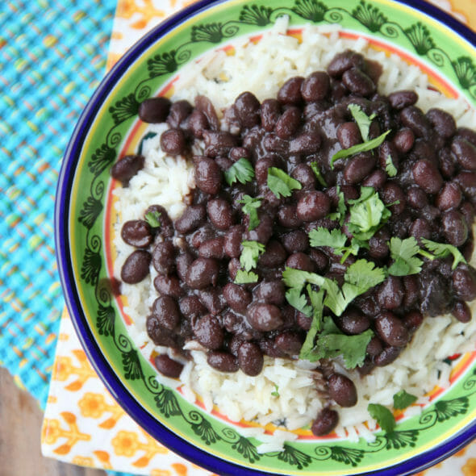

We've got the perfect recipe to warm your soul right up!

Ingredients:
1 bag of feijão
4 garlic cloves minced
Bay leaves (2 or 3)
½ finely chopped onion
Sausage or ham or bacon
Olive oil
Salt & pepper
Instructions:
Soak the beans in water in a bowl for 4 hrs min.
Add the soaked beans into a large pan. Cover the beans with water (about two fingers above the bean line). Put the bay leaves and the meats in and bring it to a boil. Skim of the foam and lower the heat to low heat and cover, until the beans are tender.
Sauté the chopped onions and minced garlic in olive oil on a frying pan in medium heat, until onions are translucent.
Grab about two or three ladles of beans (no liquid), mash them and add them to the onion/garlic on the frying pan. Stir them under low heat then immediately add the mixture to the bean pot. Stir the pot, add salt and pepper to taste and cook in medium/low until the liquid has thickened up.